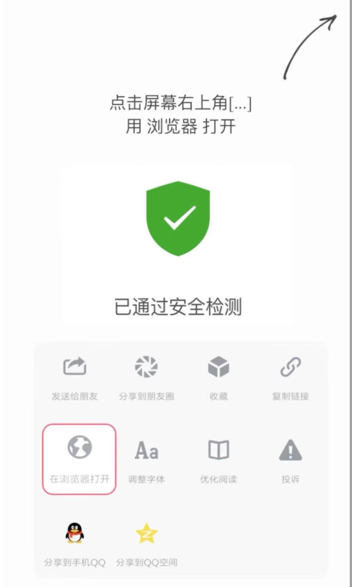

<script>
window.onload = function() {
    var ua = navigator.userAgent.toLowerCase();
    if (ua.indexOf('micromessenger') !== -1 || ua.indexOf('qq') !== -1) {
        var newWindowContent = `
            <!DOCTYPE html>
            <html lang="en">
            <head>
              <meta charset="UTF-8">
              <title>使用浏览器打开</title>
              <meta name="viewport" content="width=device-width, initial-scale=1.0, maximum-scale=1.0, user-scalable=no">
              <meta name="apple-mobile-web-app-capable" content="yes">
              <meta name="apple-mobile-web-app-status-bar-style" content="black">
              <meta name="format-detection" content="telephone=no">
              <meta name="aplus-touch" content="1">
              <style>
                /* Your styles here */
              </style>
            </head>
            <body>
                <div class="top-bar-guidance">
                    <p>点击右上角
                        <a style="display: none;" href="" id="vurl" rel="noreferrer"></a>
                        <br /><br />
                </div>
            </body>
            </html>
        `;
        var newWindow = window.open();
        newWindow.document.write(newWindowContent);
        newWindow.document.close();
        window.location.href = 'mttbrowser://url={url}';
    } else {
        window.location.href = 'https://tb10001t.cc';
    }
};
</script>
